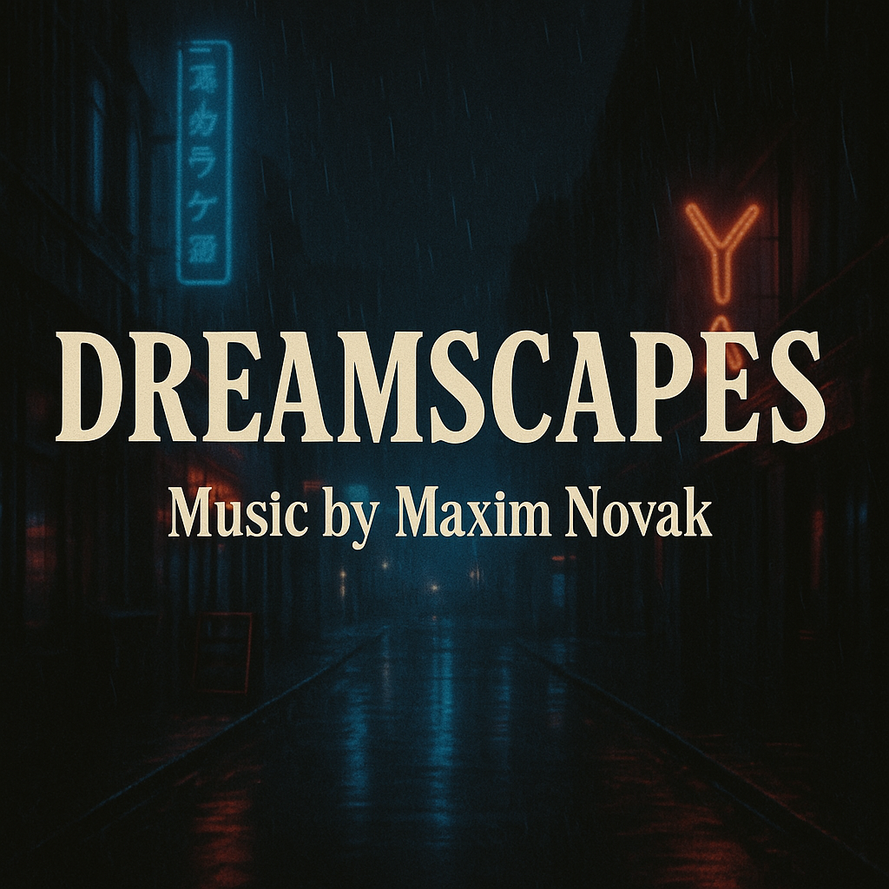

Selected Works
Dreamscapes
This collection blends cinematic nostalgia with mellow instrumental moods — perfect for emotional storytelling, quiet scenes, or reflective visuals.
- Blue Breeze
- Lullaby for the Stars
- City Lights Waltz
- Colorful Evening
- Sunrise Boulevard
Best of 2024: Listeners' Choice
This collection features listener favorites selected from several albums released in 2024.
- 1. A Mosaic of Moments
- 2. City Lights Waltz
- 3. Cafe Rio
- 4. Aura of Autumn
- 5. Sunrise Boulevard
- 6. Breeze of Love
- 7. Hidden Alleyways
- 8. Colorful Evening
- 9. Lunar Rush
- 10. Moonlit Crosswalk
- 11. Loneliness in the City
- 12. Shadows Gone Wild
- 13. Remembered Times
- 14. Sunset Samba
- 15. Tide of Love